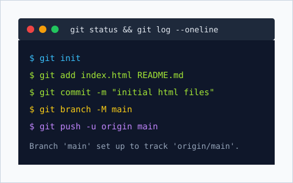

Git & GitHub Lab (CW 01)
My first coursework assignment for CSC 4370 covering repository setup, staging files, writing commits, and pushing branches to GitHub.
Main thing I learned: tracking changes cleanly with Git from the terminal before uploading files to the server.